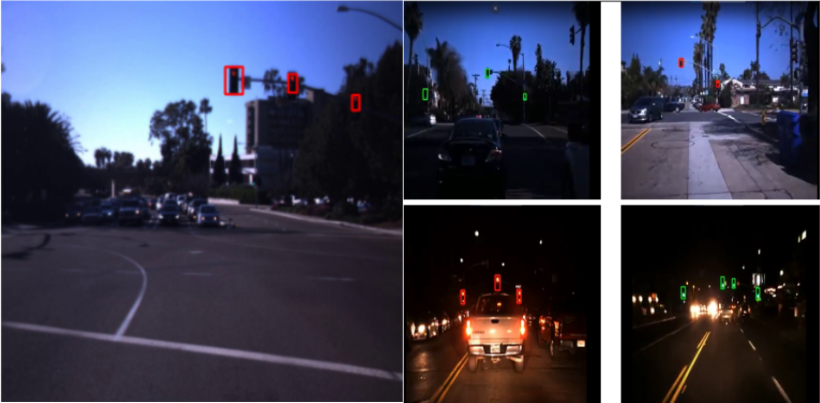
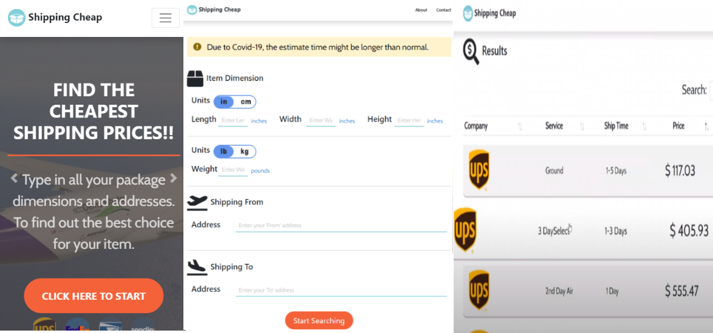
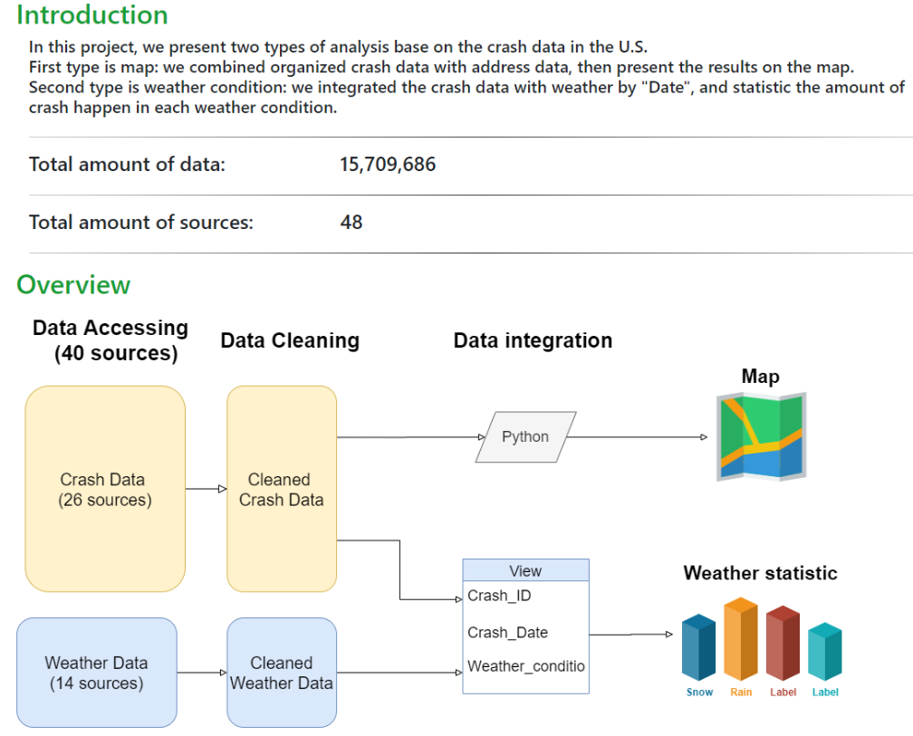

Ta-Wei Hwang
Software Engineer/ Full-Stack Engineer
Corvallis, OR, US
d65044713@mail.com
Skills
Python
Java
HTML/CSS/JavaScript
SQL
Frameworks and Tools
Languages
mandarin
English
About Ta-Wei Hwang
Ta-Wei is an energetic and team player who is currently working towards a Master's degree at Oregon State University. He majors in Computer Science with strong software skills, and his current GPA is 3.96. His major focuses are Software development and machine learning. Acordingly, He has almost three years of working experience as a System Analytics and Software Website Engineer in Taiwan's Health Care industry. Aiming to use his problem-solving ability, programming skills, and well-communication to improve people's life.
Work Experience
Wezoomtek Co. - Software Engineer
Aug 2016 - Jun 2019
I have participated in multiple projects in Wezoomtek. For example, design and build a cloud-based management system for the biggest Long-Term Care organizations in Taiwan, develop a teen social welfare management system for the Taipei government, etc. I was so lucky to attend most of the development process in these projects, including user interviews, system design, system programming, testing, and teaching the users to operate the new system.
- Programming Tools: Grails 2.0 / 3.0 MVC framework, HTML, CSS, JavaScript, Groovy, Oracle, SQL Server.
- Data Transfer: Exchanged medical data through Rest API and ETL tools. / Accessed user info through external internet.
- Report Tools: Built statistical files by Oracle BI report and iReport.
- System Design: Interviewed users / Produced Flowchart, User cases, and ER model.
- Leadership: Led a cloud-based system-developed team in three months. Managed development schedules, distributed tasks to members, cultivated an inclusive and well-communicating workplace and consistently hit all project targets.
UHT Co. - Software QA Engineer
Feb 2015 - Jun 2015
Conducted QA (Quality Assurance) for the IBM Core Banking system with Cobol and SQL Server, and was in charge of analyzing Bonds software system.
Education
Oregon State University
Sep 2019 - Dec 2021
M.E. Computer Science, Current GPA: 3.96
Soochow University
Sep 2011 - Jun 2015
B.B.A. Computer Science Information Management
Project
Traffic Light Detection Project [Pytorch, Deep Learning] - Oregon State University
Mar 2021 - May 2021
Developed a Faster-RCNN model to detect the location and color of traffic lights on the photos and videos. Optimized the results with pre-trained ResNet and MobileNetV2 bottleneck layers.
Source code Cheapest Shipping Website Project [Agile, Django] - Oregon State University
Sep 2020 - Dec 2020
Developed an RWD (Responsive web design) website with Django MVC pattern that Integrated with estimated shipping price APIs from four delivery companies to provide cheapest shipping price from different locations.
Source code Data Integration and Visualization on Vehicle Crash [MySQL, Django] - Oregon State University
Jan 2020 - Mar 2020
Constructed a MySQL database on Google Cloud. Increased the speed with indexing. Cleaned messy data with Pandas, NumPy on Python. Combined with weather data and visualized meaningful knowledge with Tableau on website that was built with Django.
Source code 